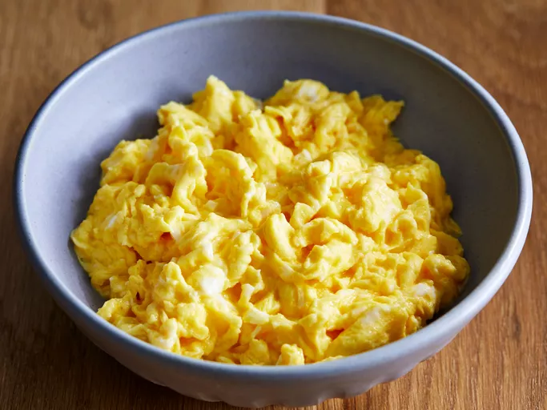

Scrambled Eggs

Description
Use your microwave to make light and fluffy scrambled eggs for a quick and easy breakfast to start your day. Follow the technique in this recipe for perfect results every time.
Ingredients
- Cheese: Stir in some shredded Cheddar or Monterey Jack for a cheesy twist.
- Ham or Bacon: Diced ham or chopped bacon makes this hearty recipe even more filling.
- Veggies: Diced bell peppers, onions, and spinach add color and flavor. To turn up the heat, try jalapeños.
- Herbs: Fresh herbs – such as basil, rosemary, oregano, and thyme – lend bright, earthy flavor.
Steps
- Gather all ingredients.
- Break the eggs into a microwave-proof mixing bowl. Add milk and salt; mix well.
- Pop the bowl into the microwave and cook on high power for 30 seconds. Remove bowl, beat eggs very well, scraping down the sides of the bowl, and return to the microwave for another 30 seconds.
- Repeat this pattern, stirring every 30 seconds for up to 2 1/2 minutes. Stop when eggs have the consistency you desire.
- Serve warm and enjoy!